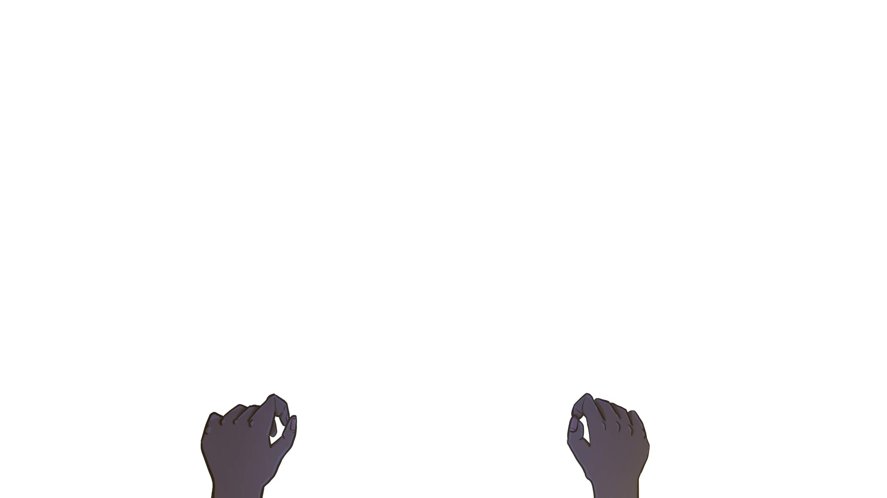

<!-- <script src="https://cdn.jsdelivr.net/gh/netizenorg/netnet-standard-library/build/nn.min.js"></script>
<script>
    /* global nn */
    const table = 'table.png'
    const hands = 'hands.png'
    let color = 'black'
    async function setup () {
        nn.get('body').css({
            backgroundColor: color
        })

        await nn.loadImage(table)
        const start = nn.create('img')
        .set({
            src: table
        })
        .css({
            position: 'absolute',
            height: nn.height
        })
        .addTo('body')

        start.css({
            top: nn.height / 2 - start.height / 2,
            left: nn.width / 2 - start.width / 2
        })
    }

    nn.on('load', setup)
</script> -->
<style>
    body {
        margin: 0;
        overflow: hidden;
        background-color: black;
        background-image: url(table.png);
        background-position: center;
        background-size: auto 100vh;
        background-repeat: no-repeat;
        background-attachment: fixed;
    }

    #diningscene {
        transform-style: preserve-3d;
        perspective: 500px;
        perspective-origin: center;
        width: 912px;
        height: 558px;
        margin: 10vh auto;
    }

    #hands {
        width: 100%;
        transform: translateZ(100px);
    }
</style>

<section id="diningscene">
    
</section>

<script>
    window.addEventListener('mousemove', (e) => {
        const x = (e.clientX / window.innerWidth) * 100
        const y = (e.clientY / window.innerHeight) * 100
        const diningscene = document.querySelector('#diningscene')
        diningscene.style.perspectiveOrigin = `${x}% ${y}%`
    })
</script>